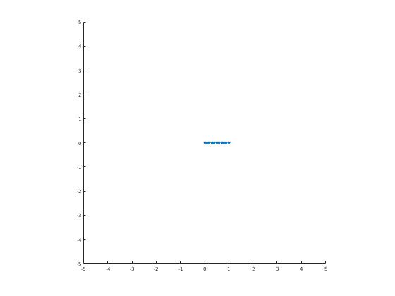
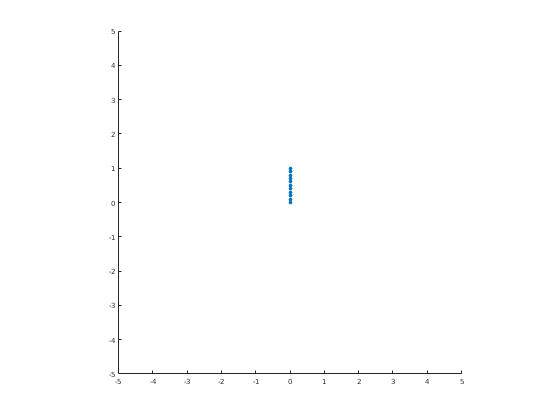
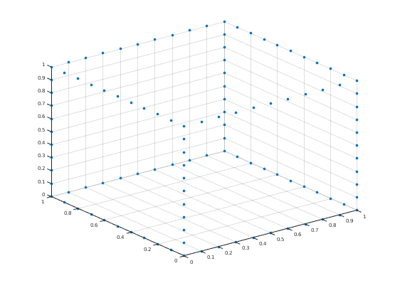
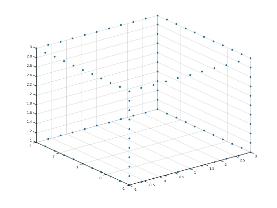
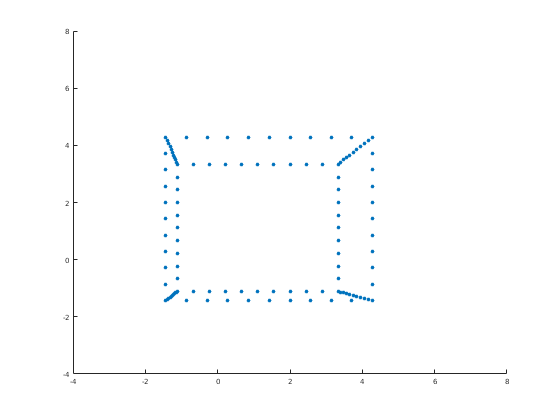
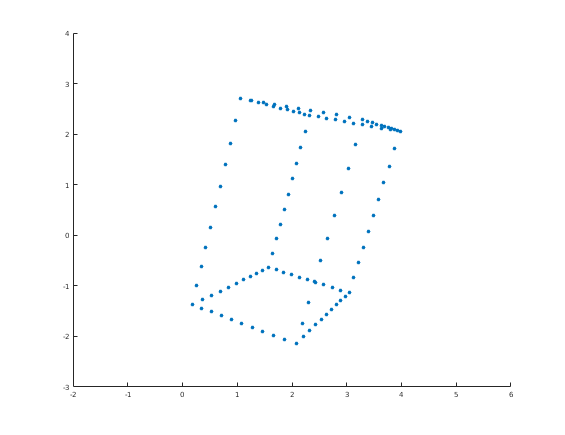

Contents
syms T(a,b,c) RX(t) RY(t) RZ(t) P(d) T(a,b,c)=[1 0 0 a;0 1 0 b;0 0 1 c;0 0 0 1]; RX(t)=[1 0 0 0 ; 0 cos(t) -sin(t) 0;0 sin(t) cos(t) 0 ; 0 0 0 1]; RY(t)=[cos(t) 0 sin(t) 0;0 1 0 0;-sin(t) 0 cos(t) 0 ;0 0 0 1]; RZ(t)=[cos(t) -sin(t) 0 0;sin(t) cos(t) 0 0 ; 0 0 1 0; 0 0 0 1]; P(d)=[1 0 0 0;0 1 0 0;0 0 0 0;0 0 -1/d 1];
For this project, you're going to build a cube like in Justin's notes.
Ax = [0:.1:1; zeros(1,11); zeros(1,11); ones(1,11)]; figure scatter(Ax(1,:),Ax(2,:),'filled'); axis square;axis([-5 5 -5 5]);
Ax represents some points on the x-axis in 3-space. Rotate them to get two lists of points Ay and Az on the y- and z-axes. Note: you can "cheat" and see what you're doing by calling scatter3() on the first three columns of Ax.
% Ax Ay = RZ(pi/2) * Ax; Az = RY(-pi/2) * Ax; figure scatter(Ay(1,:),Ay(2,:),'filled'); axis square;axis([-5 5 -5 5]);
Cool okay. Now boost Ax, Ay, and Az to get the rest of the edges of the cube. Then store the whole cube as C = [Ax Ay Az ...].
Ax0 = Ax;
Ay0 = Ay;
Az0 = Az;
Ax1 = T(0, 1, 0) * Ax;
Ax2 = T(0, 0, 1) * Ax;
Ax3 = T(0, 1, 1) * Ax;
Ay1 = T(1, 0, 0) * Ay;
Ay2 = T(1, 0, 1) * Ay;
Ay3 = T(0, 0, 1) * Ay;
Az1 = T(1, 0, 0) * Az;
Az2 = T(1, 1, 0) * Az;
Az3 = T(0, 1, 0) * Az;
C = [Ax0 Ax1 Ax2 Ax3 Ay0 Ay1 Ay2 Ay3 Az0 Az1 Az2 Az3];
figure
scatter3(C(1, :), C(2, :), C(3,:), 'filled')
 Nice. This cube has the wrong dimensions though -- it should be scaled up and shifted to get it to Justin's cube. Do that and call it CJ.
% JC = transpose([-1 -1 1 1; 3 -1 1 1; 3 3 1 1; -1 3 1 1; -1 -1 3 1; 3 -1 3 1; 3 3 3 1; -1 3 3 1]); % figure % scatter3(JC(1, :), JC(2, :), JC(3, :), 'filled') CJ = [ 4 0 0 0; 0 4 0 0; 0 0 2 0; 0 0 0 1; ] * C; CJ = T(-1, -1, 1) * CJ; figure scatter3(CJ(1, :), CJ(2, :), CJ(3, :), 'filled');
Now prove that your cube is Justin's cube by creating the pictures on pages 65 and 66.
CJ1 = P(10) * CJ; CJ1 for i=1:length(CJ1); CJ1(:,i)=CJ1(:,i) / CJ1(4,i); end; figure scatter(CJ1(1, :), CJ1(2, :),'filled'); axis([-4 8 -4 8]);
CJ1 = [ -1, -3/5, -1/5, 1/5, 3/5, 1, 7/5, 9/5, 11/5, 13/5, 3, -1, -3/5, -1/5, 1/5, 3/5, 1, 7/5, 9/5, 11/5, 13/5, 3, -1, -3/5, -1/5, 1/5, 3/5, 1, 7/5, 9/5, 11/5, 13/5, 3, -1, -3/5, -1/5, 1/5, 3/5, 1, 7/5, 9/5, 11/5, 13/5, 3, -1, -1, -1, -1, -1, -1, -1, -1, -1, -1, -1, 3, 3, 3, 3, 3, 3, 3, 3, 3, 3, 3, 3, 3, 3, 3, 3, 3, 3, 3, 3, 3, 3, -1, -1, -1, -1, -1, -1, -1, -1, -1, -1, -1, -1, -1, -1, -1, -1, -1, -1, -1, -1, -1, -1, 3, 3, 3, 3, 3, 3, 3, 3, 3, 3, 3, 3, 3, 3, 3, 3, 3, 3, 3, 3, 3, 3, -1, -1, -1, -1, -1, -1, -1, -1, -1, -1, -1] [ -1, -1, -1, -1, -1, -1, -1, -1, -1, -1, -1, 3, 3, 3, 3, 3, 3, 3, 3, 3, 3, 3, -1, -1, -1, -1, -1, -1, -1, -1, -1, -1, -1, 3, 3, 3, 3, 3, 3, 3, 3, 3, 3, 3, -1, -3/5, -1/5, 1/5, 3/5, 1, 7/5, 9/5, 11/5, 13/5, 3, -1, -3/5, -1/5, 1/5, 3/5, 1, 7/5, 9/5, 11/5, 13/5, 3, -1, -3/5, -1/5, 1/5, 3/5, 1, 7/5, 9/5, 11/5, 13/5, 3, -1, -3/5, -1/5, 1/5, 3/5, 1, 7/5, 9/5, 11/5, 13/5, 3, -1, -1, -1, -1, -1, -1, -1, -1, -1, -1, -1, -1, -1, -1, -1, -1, -1, -1, -1, -1, -1, -1, 3, 3, 3, 3, 3, 3, 3, 3, 3, 3, 3, 3, 3, 3, 3, 3, 3, 3, 3, 3, 3, 3] [ 0, 0, 0, 0, 0, 0, 0, 0, 0, 0, 0, 0, 0, 0, 0, 0, 0, 0, 0, 0, 0, 0, 0, 0, 0, 0, 0, 0, 0, 0, 0, 0, 0, 0, 0, 0, 0, 0, 0, 0, 0, 0, 0, 0, 0, 0, 0, 0, 0, 0, 0, 0, 0, 0, 0, 0, 0, 0, 0, 0, 0, 0, 0, 0, 0, 0, 0, 0, 0, 0, 0, 0, 0, 0, 0, 0, 0, 0, 0, 0, 0, 0, 0, 0, 0, 0, 0, 0, 0, 0, 0, 0, 0, 0, 0, 0, 0, 0, 0, 0, 0, 0, 0, 0, 0, 0, 0, 0, 0, 0, 0, 0, 0, 0, 0, 0, 0, 0, 0, 0, 0, 0, 0, 0, 0, 0, 0, 0, 0, 0, 0, 0] [ 9/10, 9/10, 9/10, 9/10, 9/10, 9/10, 9/10, 9/10, 9/10, 9/10, 9/10, 9/10, 9/10, 9/10, 9/10, 9/10, 9/10, 9/10, 9/10, 9/10, 9/10, 9/10, 7/10, 7/10, 7/10, 7/10, 7/10, 7/10, 7/10, 7/10, 7/10, 7/10, 7/10, 7/10, 7/10, 7/10, 7/10, 7/10, 7/10, 7/10, 7/10, 7/10, 7/10, 7/10, 9/10, 9/10, 9/10, 9/10, 9/10, 9/10, 9/10, 9/10, 9/10, 9/10, 9/10, 9/10, 9/10, 9/10, 9/10, 9/10, 9/10, 9/10, 9/10, 9/10, 9/10, 9/10, 7/10, 7/10, 7/10, 7/10, 7/10, 7/10, 7/10, 7/10, 7/10, 7/10, 7/10, 7/10, 7/10, 7/10, 7/10, 7/10, 7/10, 7/10, 7/10, 7/10, 7/10, 7/10, 9/10, 22/25, 43/50, 21/25, 41/50, 4/5, 39/50, 19/25, 37/50, 18/25, 7/10, 9/10, 22/25, 43/50, 21/25, 41/50, 4/5, 39/50, 19/25, 37/50, 18/25, 7/10, 9/10, 22/25, 43/50, 21/25, 41/50, 4/5, 39/50, 19/25, 37/50, 18/25, 7/10, 9/10, 22/25, 43/50, 21/25, 41/50, 4/5, 39/50, 19/25, 37/50, 18/25, 7/10]
page 66
CJ2 = P(10) * T(0, 0, -1) * RZ(pi/12) * RY(pi/3) * RX(pi/6) * CJ; for i=1:length(CJ2); CJ2(:,i)=CJ2(:,i) / CJ2(4,i); end; figure scatter(CJ2(1, :), CJ2(2, :),'filled'); axis([-2 6 -3 4]);